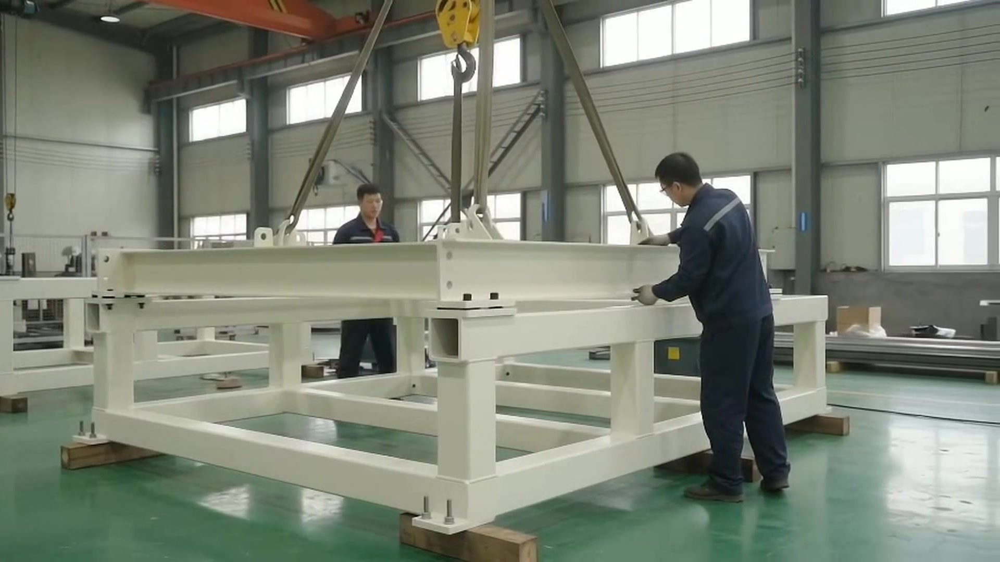
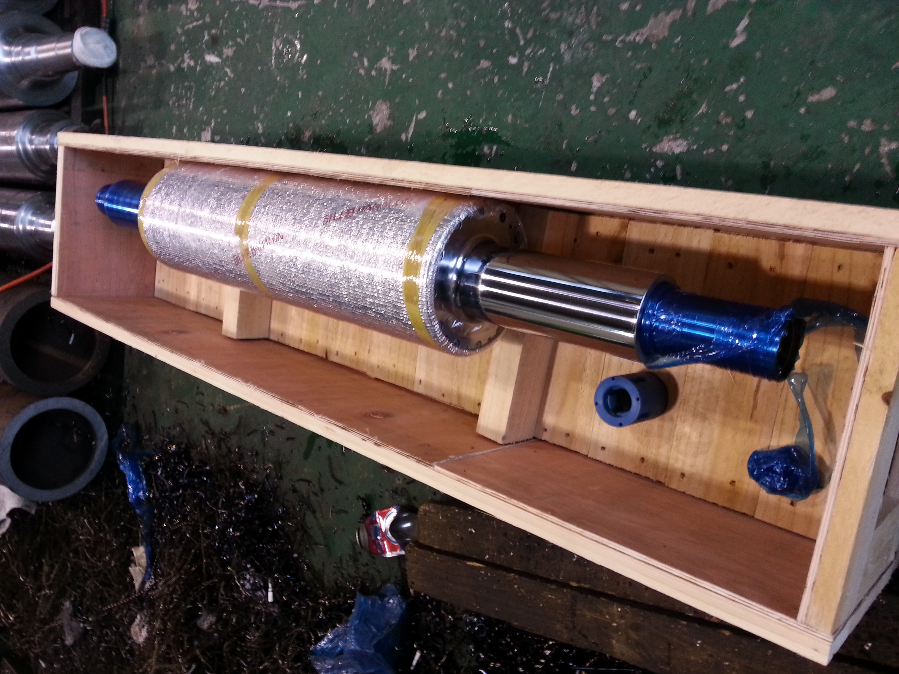

기계 개발 이력
분사식 나염기
2003년 특허 등록 · 이병덕
원단 이송과 왕복 분사 구조
SEUNGJI PRECISION

SEUNGJI PRECISION
롤 하나의 형상부터
현장의 제작 조건까지.
승지정밀산업롤
산업용 롤, 몸통·축·체결부 가공
고무·우레탄 피복, 연마와 표면 가공 상담
기존 롤의 상태 확인, 도면에 따른 장치 제작 상담
기계 개발 이력
2003년 특허 등록 · 이병덕
원단 이송과 왕복 분사 구조
제작과 가공
제품의 용도와 사양에 따라
작업 범위와 공정을 협의합니다.

기존 도면이나 제품 사진을 바탕으로 형상, 주요 치수와 사용 환경을 확인합니다.
협의한 사양에 따라 몸통과 축, 단차와 체결부 등 필요한 부위를 가공합니다.
고무·우레탄 피복, 연마 등 제품에 필요한 표면 작업을 상담합니다.
도면의 확인 항목과 조립 조건을 기준으로 제작품을 살펴봅니다. 검사 항목은 작업 범위에 따라 협의합니다.
축과 표면 보호, 운송 조건을 고려해 포장과 출하 방법을 정합니다.

제작 기록
제작된 제품이 놓였던 현장의 기록입니다.

프레임형 롤 장치
폭 방향으로 배치된 롤의 몸통입니다. 제품 단품과 설비 안에서의 배치를 함께 확인할 수 있습니다.
이 장치의 사진·구조 보기 ↗사진에서 보이는 구성에 대한 설명입니다. 세부 제작 범위와 적용 조건은 문의해 주세요.